Al je antwoorden worden gewist en je begint opnieuw. Weet je het zeker?
Jouw resultaten
PAK 5 · Jaar 3 oefenvragen
—
/ 100
0
Goed
0
Fout
0
Niet beantwoord
Vraag 1
Spijsvertering en stofwisseling
Vraag 1. Bloeding in de tractus digestivus - melena
Een bloeding in de tractus digestivus kan, afhankelijk van de lokalisatie (hoog of laag), leiden tot melena óf helderrood bloedverlies per anum.
Wat is bij een circulatoir stabiele patiënt de laagste lokalisatie waarbij nog melena op zal treden i.p.v. helderrrood bloedverlies per anum?
Vraag 2
Vraag 2.
Patiënt A 50-jarige man met acute buik en peritoneale prikkeling na 1 week van diclofenac (NSAID) gebruik i.v.m. enkeldistorsie. Voorgeschiedenis: alcoholabusus
Patiënt B 75-jarige man met sinds 1 week pijn in de linkeronderbuik, welke sinds 1 dag acuut is verergerd. Bij aankomst op de SEH wordt een temperatuur van 38,5 graden Celcius gemeten. Tevens drukpijn linkeronderbuik met geringe loslaatpijn.
Welke waarschijnlijkheidsdiagnose hoort bij welke patiënt?
Vraag 3
Vraag 3. Alarmsymptomen bij maagklachten
Patiënten met maagklachten kunnen symptomen vertonen die kunnen duiden op ernstige pathologie (zoals een maligniteit). Men spreekt daarbij van alarmsymptomen, waarbij op korte termijn endoscopisch onderzoek moet worden verricht.
Wat zijn de 5 alarmsymptomen?
Meerdere antwoorden mogelijk.
Vraag 4
Vraag 4. Beleid bij maagklachten
Sleep de drie opties naar de juiste plaats (gekleurde vak) in onderstaand schema 'beleid bij maagklachten'.
Sleep de drie opties naar het juiste gekleurde vak, of tik eerst op een kaart en dan op een vak.
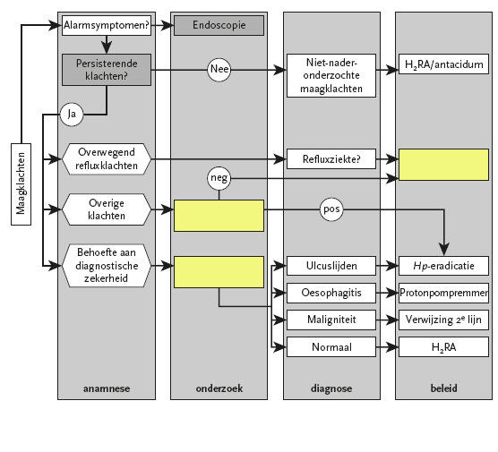
.
.
.
Vraag 5
Vraag 5. Endoscopische afwijkingen in de tractus digestivus
U ziet hier 4 foto's van endoscopische afwijkingen in de tractus digestivus.
Wat is wat?
Sleep de juiste diagnose naar de bijbehorende foto, of tik eerst op een kaart en dan op een vak.
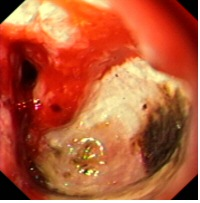
1
Sleep hier naartoe
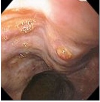
2
Sleep hier naartoe
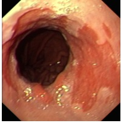
3
Sleep hier naartoe
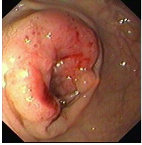
4
Sleep hier naartoe
Vraag 6
Vraag 6. Helicobacter pylori infectie
Bij welke patiënt(en) dient na eradicatie van Helicobacter pylori infectie controle op geslaagde behandeling plaats te vinden?
Meerdere antwoorden mogelijk.
Vraag 7
Vraag 7. Anatomie galwegen
Wat is wat?
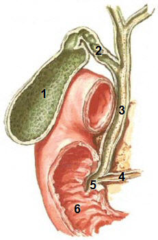
Sleep de juiste structuur naar het bijbehorende nummer, of tik eerst op een kaart en dan op een vak.
1
Sleep hier naartoe
2
Sleep hier naartoe
3
Sleep hier naartoe
4
Sleep hier naartoe
5
Sleep hier naartoe
6
Sleep hier naartoe
Vraag 8
Vraag 8. Cholelithiasis
Welke bewering(en) t.a.v. cholelithiasis is (zijn) juist?
Meerdere antwoorden mogelijk.
Vraag 9
Vraag 9. Regel van Courvoisier
Welke kenmerken heeft de regel van Courvoisier?
Meerdere antwoorden mogelijk.
Vraag 10
Vraag 10. Ondervoeding bij ziekenhuispatiënten
Bij grofweg 1 op de 3 ziekenhuispatiënten is er sprake van ondervoeding.
Welke factoren spelen daarbij een belangrijke rol?
Meerdere antwoorden mogelijk.
Vraag 11
Vraag 11. Ondervoeding bij ziekenhuispatiënten
Hoe wordt er tegenwoordig in veel ziekenhuizen gescreend op ondervoeding?
Vraag 12
Vraag 12. Levercirrose
Welke symptomen passen bij levercirrose?
Meerdere antwoorden mogelijk.
Vraag 13
Vraag 13. Coeliakie
Foto: biopsie uit de dunne darm
Welke symptomen passen bij coeliakie?
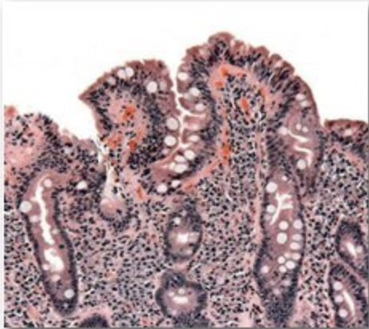
Meerdere antwoorden mogelijk.
Vraag 14
Vraag 14. Enamel stoornis
Foto: enamel stoornis
Bij welke aandoening past deze enamel stoornis?
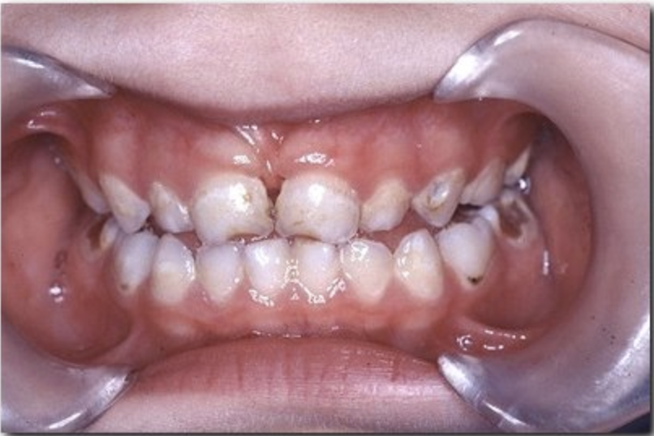
Vraag 15
Vraag 15. Vrij lucht onder het diafragma
Deze röntgenfoto is bij een staande patiënt gemaakt. Onder beide diafragmakoepels is vrij lucht zichtbaar.
Op welke afwijking wijst de aanwezigheid van vrij lucht onder het diafragma?
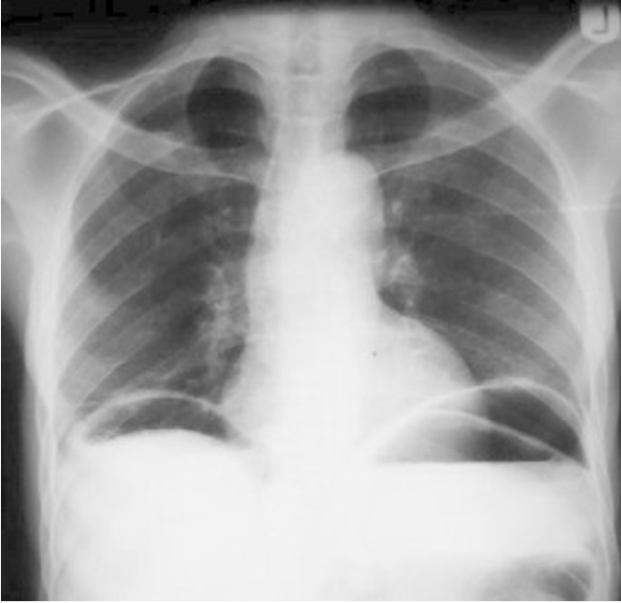
Vraag 16
Vraag 16. Casus
Een 28-jarige man meldt zich op de afdeling Spoedeisende Hulp met klachten van pijn in de rechter onderbuik, aanvankelijk begonnen in de rechter bovenbuik. Hij heeft subfebriele temperatuur en diarree zonder bloedbijmenging. Bij lichamelijk onderzoek wordt een geprikkelde buik met drukpijn maximaal ter hoogte van het punt van Mc Burney gevonden.
De waarschijnlijkheidsdiagnose luidt:
Vraag 17
Vraag 17. Casus
Een patiënt presenteert zich op de afdeling Spoedeisende Hulp met bandvormige pijn in de linker bovenbuik, uitstralend naar de rug. Bij het laboratoriumonderzoek zijn amylase en lipase verhoogd.
De waarschijnlijkheidsdiagnose luidt:
Vraag 18
Vraag 18. Pancreatitis
Wat zijn de drie meest voorkomende oorzaken van pancreatitis?
Meerdere antwoorden mogelijk.
Vraag 19
Vraag 19. Casus
Een patiënt presenteert zich met pijn in de rechter bovenbuik, icterus en koorts.
Wat staat bovenaan in de differentiaal diagnose?
Vraag 20
Vraag 20. Casus
Een 60-jarige patiënt komt bij de huisarts met klachten van vermoeidheid en gewichtverlies (8 kg in 3 mnd) ondanks normaal dieet. Bij oriënterend laboratoriumonderzoek wordt een microcytaire anemie gevonden.
Welke twee aanvullende onderzoeken dient u als huisarts aan te vragen? (interactieve versie volgt)
Modelantwoord
(volgt)
Vraag 21
Vraag 21. Bias
Welke analyse techniek is gevoelig voor welke vorm van bias?
Sleep een optie naar de bijbehorende rij, of tik eerst op een kaart en dan op een rij.
Analyseer onderstaande vraagstelling volgens het PICO model.
Wat is het effect van negen keer één maal per week een infuus met epothilone D (EpoD) in vergelijking tot placebo op de cognitieve vaardigheden, zoals gemeten met cognitieve tests bij patiënten met een milde vorm van de Ziekte van Alzheimer?
Sleep een optie naar de bijbehorende rij, of tik eerst op een kaart en dan op een rij.
P (population):
Sleep hier naartoe
I (intervention):
Sleep hier naartoe
C (comparison):
Sleep hier naartoe
O (outcome):
Sleep hier naartoe
Vraag 23
Vraag 23. In welk deel van het maagdarmstelsel wordt ijzer opgenomen?
Vraag 24
Vraag 24. Hoeveel procent van de Nederlanders heeft obesitas? (interactieve versie volgt)
Modelantwoord
(volgt)
Vraag 25
Vraag 25. Welke beweringen over hepatitis B-infectie zijn juist?
Meerdere antwoorden mogelijk.
Vraag 26
Vraag 26. Wat hoort bij morbus Crohn, wat hoort bij colitis ulcerosa en wat hoort bij beide?
Sleep elk kenmerk naar de juiste categorie, of tik eerst op een kaart en dan op een categorie.
Morbus Crohn
Sleep hier naartoe
Colitis ulcerosa
Sleep hier naartoe
Beide
Sleep hier naartoe
Vraag 27
Circulatie en vasculaire stoornissen
Vraag 27. ECG
Welk interval (PQ, QT) of segment (ST) hoort bij welk deel van dit ECG? [sleep naar het juiste witte kader]
Sleep PQ, ST en QT naar het juiste witte kader op het ECG, of tik eerst op een kaart en dan op een kader.
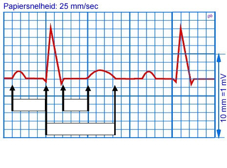
.
.
.
Vraag 28
Vraag 28. ECG - hartfrequentie
Dit is een ECG met een regulair ritme.
Wat is de hartfrequentie per minuut?
Papiersnelheid: 25 mm/sec (horizontaal)
10 mm = 1 mV (verticaal)
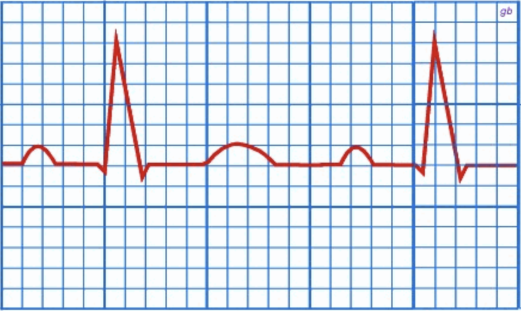
Modelantwoord
(volgt)
Vraag 29
Vraag 29. Longembolie op CT-scan
Op deze CT-scan van de thorax is een longembolie zichtbaar, die 2x wordt 'aangesneden'.
Plaats het blauwe vierkantje op de longembolie. (sleepvraag — interactieve versie volgt; zie afbeelding)
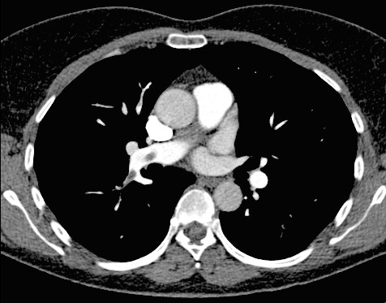
Modelantwoord
(volgt)
Vraag 30
Vraag 30. Doorsnede door coronairarterie met atheromateuze plaque
Zie foto.
Wat hoort bij wat?
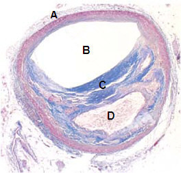
Sleep de juiste structuur naar de bijbehorende letter, of tik eerst op een kaart en dan op een vak.
A
Sleep hier naartoe
B
Sleep hier naartoe
C
Sleep hier naartoe
D
Sleep hier naartoe
Vraag 31
Vraag 31. Boezemfibrilleren
Welk deel van het ECG is afwezig bij boezemfibrilleren?
Vraag 32
Vraag 32. Stijging van het ST-segment
Een stijging van het ST-segment is één van de belangrijkste electrocardiografische kenmerken van een acuut myocardinfarct.
In welk van de 3 ECGs is een stijging van het ST-segment zichtbaar?
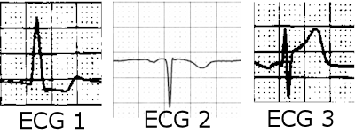
Vraag 33
Vraag 33. RAAS
Onderdelen van het renine angiotensine aldosteron systeem (RAAS) bevinden zich in verschillende organen.
Welk orgaan is de primaire bron van welk onderdeel?
Sleep een optie naar de bijbehorende rij, of tik eerst op een kaart en dan op een rij.
longen
Sleep hier naartoe
lever
Sleep hier naartoe
bijnieren
Sleep hier naartoe
nieren
Sleep hier naartoe
Vraag 34
Vraag 34. Verhoogde cholesterolconcentratie
Voor een 35-jarige man met een sterk verhoogde cholesterolconcentratie (LDL-cholesterolconcentratie: 7.5 mmol/l, normaal < 3 mmol/l) geldt:
Meerdere antwoorden mogelijk.
Vraag 35
Vraag 35. Kriebelhoest door ACE-remmer
Een 45-jarige vrouw, bekend met mild asthma bronchiale waarvoor ze niet behandeld wordt, krijgt in verband met hypertensie (160/100 mmHg) een ACE-remmer voorgeschreven. De bloeddruk daalt hierop fraai, maar ze ontwikkelt een kriebelhoest.
Nu kan het beste
Vraag 36
Vraag 36. Casus
Een 59-jarige man ontwikkelt na een avondje barbecueën peracuut buikpijn, gevolgd door bloederige diarree. Hij wordt naar de Spoedeisende Hulp gebracht. Onder verdenking van een geruptureerd aneurysma wordt met spoed echografie van de buik verricht, waar de aorta een iets vergrote diameter heeft (4 cm), zonder tekenen van lekkage.
Wat dient er nu te gebeuren?
Vraag 37
Vraag 37. Casus
U komt als huisarts bij een man van 56 jaar die acuut pijn in de buik heeft gekregen. Hij ziet bleek en voelt klam aan. De bloeddruk bedraagt 90/55 mm Hg. Zijn vader is op 60-jarige leeftijd overleden aan een gebarsten aneurysma van de thoracale aorta.
Wat dient u te doen?
Vraag 38
Vraag 38. Elektrische hartas
Hypertrofie van de rechter kamer uit zich in het ECG onder andere door een draaiing van de elektrische hartas naar
Vraag 39
Vraag 39. Hemostase
Wat hoort bij wat?
Sleep elk item naar de juiste categorie, of tik eerst op een kaart en dan op een categorie.
Primaire hemostase (bloedstelping)
Sleep hier naartoe
Secundaire hemostase (bloedstolling)
Sleep hier naartoe
Vraag 40
Vraag 40. Foto: m. cremaster van een obese rat - uitvergroting van het proximale gedeelte van deze spier
Wat hoort bij wat?
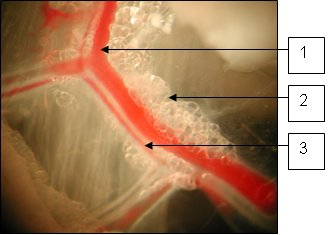
Sleep de juiste structuur naar het bijbehorende nummer, of tik eerst op een kaart en dan op een vak.
1
Sleep hier naartoe
2
Sleep hier naartoe
3
Sleep hier naartoe
Vraag 41
Vraag 41. Bloeddrukcurve aortaboog
Hier is een registratie van de berekende bloeddruk in de aortaboog weergegeven, gemeten met het SphygmoCor®-systeem. (hierbij wordt het drukverloop in de aortaboog berekend uit het niet-invasief gemeten drukverloop in de a. radialis)
Welke uitspraak over ΔP is NIET juist?
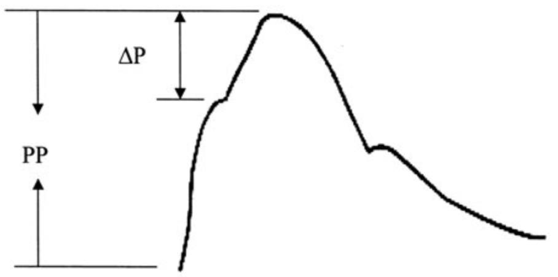
Vraag 42
Vraag 42. Casus
U bent internist in een ziekenhuis in Den Helder. U wordt door een huisarts op Texel gebeld over een verwarde patiënt van 61 jaar met een anemie (Hb 6,2 mmol/l). Het LDH gehalte is sterk verhoogd. Verder laboratorium onderzoek kan niet worden verricht.
Welke diagnostische overweging moet bij deze patient tot directe verwijzing naar het ziekenhuis leiden?
Vraag 43
Vraag 43. Anemie
Wat hoort bij wat?
Sleep elk item naar de juiste categorie, of tik eerst op een kaart en dan op een categorie.
Microcytaire anemie
Sleep hier naartoe
Normocytaire anemie
Sleep hier naartoe
Macrocytaire anemie
Sleep hier naartoe
Vraag 44
Vraag 44. Antistollingstherapie
Bij een aantal vormen van antistollingstherapie moet het effect worden gemonitord.
Hoe dient deze monitoring plaats te vinden?
PT: protrombinetijd APTT: geactiveerde partiële tromboplastinetijd INR: internationaal genormaliseerde ratio
coumarinederivaat (oraal)
gefractioneerde heparine (subcutaan)
heparine (intraveneus)
dabigatran (oraal)
Vraag 45
Vraag 45. Pre-eclampsie
Tijdens de zwangerschap kan pre-eclampsie optreden.
Wat geldt voor dit ernstige ziektebeeld? (meerdere alternatieven zijn juist)
Meerdere antwoorden mogelijk.
Vraag 46
Vraag 46. Dreigende spontane vroeggeboorte
Selecteer drie tekenen van een dreigende spontane vroeggeboorte: (interactieve versie volgt)
Modelantwoord
(volgt)
Vraag 47
Neurlogie en oogheelkunde
Vraag 47. Bacteriële meningitis
Op de spoedeisende hulp ziet de SEH-arts een volwassen patiënt met een verlaagd bewustzijn (E=2, M=4, V=3). Er bestaat een sterke verdenking op een bacteriële meningitis.
Plaats de te verrichten handelingen in de juiste volgorde (de eerst te verrichten handeling boven, en zo verder) (interactieve versie volgt)
Modelantwoord
(volgt)
Vraag 48
Vraag 48. Glasgow Coma Score
Een toevallig passerende huisarts treft op straat een motorrijder met ernstig schedel-hersenletsel aan. De patiënt is buiten kennis. Op aanspreken opent hij de ogen niet, op een sterke pijnprikkel heel even wel. Op pijnprikkels lokaliseert hij met de rechterarm, de linkerarm strekt. Hierbij maakt hij een kreunend geluid, waarin geen woorden herkenbaar zijn.
De Glasgow Coma Score is: (interactieve versie volgt)
Modelantwoord
(volgt)
Vraag 49
Vraag 49. Intraveneuze trombolyse bij een herseninfarct
Binnen hoeveel uur na het ontstaan van de eerste klachten dient intraveneuze trombolyse plaats te vinden? (contra-indicatie voor deze behandeling is een (hersen)bloeding of verhoogd bloedingsrisico)
Vraag 50
Vraag 50. Een patiënt kreeg tijdens het bewerken van metaal het gevoel alsof er iets in zijn oog zit. Hij heeft een pijnlijk, wat rood oog. Bij het onderzoek ziet de huisarts het volgende beeld.
Er is sprake van een
Vraag 51
Vraag 51. Een patiënt klaagt over horizontaal dubbelzien bij kijken naar links sinds 2 dagen. Bij inspectie zie je dat het linkeroog (OS) iets naar binnen staat (esotropie) en niet naar buiten beweegt. Er is geen hoogstand of laagstand van het oog. Aan het rechteroog (OD) geen bijzonderheden.
Er is sprake van een uitval van de
Vraag 52
Vraag 52. Sensibiliteitsuitval
In de afbeeldingen is met kleur schematisch de uitval van de sensibiliteit aangegeven.
Sleep de naam van de aandoening naar de juiste afbeelding. (sleepvraag — interactieve versie volgt; zie afbeelding)
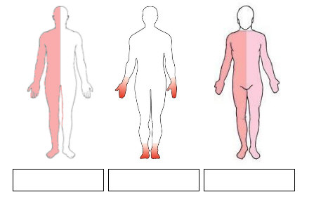
Modelantwoord
(volgt)
Vraag 53
Vraag 53. Slaapstoornissen
Welke begrippen horen bij welke stoornis?
slaapverlamming
adipositas
frequent snurken
sleep onset rapid eye movements
zeldzaam
verhoogd cardiovasculair risico
modafinil
continue positieve drukbeademing
hypocretine
Vraag 54
Vraag 54. Hersenzenuwuitval
Geef voor elke afbeelding aan welke hersenzenuw is uitgevallen.
Vraag 55. Een 46-jarige vrouw komt in verband met een tranende uitvloed van beide ogen. Haar kinderen waren vorige week verkouden. Bij inspectie valt op dat er aankleurende lesies zijn op het hoornvlies.
Wat is de meest waarschijnlijke diagnose?
Vraag 56
Vraag 56. Amaurosis fugax kan worden veroorzaakt door
Vraag 57
Vraag 57. Multipele sclerose
Welke vier bevindingen zijn met multipele sclerose geassocieerd?
Meerdere antwoorden mogelijk.
Vraag 58
Vraag 58. Ziekte van Parkinson
Welke drie fenomenen ondersteunen de diagnose 'ziekte van Parkinson'?
Meerdere antwoorden mogelijk.
Vraag 59
Vraag 59. Dementie
Sleep de symptomen en bevindingen naar de bijbehorende diagnoses.
Sleep elk symptoom naar de juiste diagnose, of tik eerst op een kaart en dan op een categorie.
Frontotemporale dementie
Sleep hier naartoe
Ziekte van Alzheimer
Sleep hier naartoe
Vasculaire dementie
Sleep hier naartoe
Dementie met Lewy bodies
Sleep hier naartoe
Vraag 60
Vraag 60. Bij een patiënt met een hypofysetumor en gezichtsveldafwijkingen vinden we bij onderzoek
Vraag 61
Vraag 61. Het syndroom van Horner ontstaat door uitval van de sympathische zenuwvezels rond het oog.
Dit leidt aan de aangedane zijde onder andere tot
Vraag 62
Vraag 62. Behandeling van migraine
Welke medicijnen horen bij de aanvalsbehandeling van migraine en welke bij de profylactische behandeling?
Sleep elk item naar de juiste categorie, of tik eerst op een kaart en dan op een categorie.
Aanvalsbehandeling
Sleep hier naartoe
Profylactische behandeling
Sleep hier naartoe
Vraag 63
Vraag 63. Radiculair syndroom
Welke bevindingen horen bij een radiculair syndroom L4 en welke bij een radiculair syndroom L5?
Sleep elk item naar de juiste categorie, of tik eerst op een kaart en dan op een categorie.
Radiculair syndroom L5
Sleep hier naartoe
Radiculair syndroom L4
Sleep hier naartoe
Vraag 64
Vraag 64. Vasculaire claudicatie en neurogene claudicatie
Welke anamnestische bevindingen horen bij vasculaire claudicatie van het been en welke bij neurogene claudicatie?
Sleep elk item naar de juiste categorie, of tik eerst op een kaart en dan op een categorie.
Vasculaire claudicatie
Sleep hier naartoe
Neurogene claudicatie
Sleep hier naartoe
Vraag 65
Vraag 65. Via de reumatoloog komt een 63-jarige patient. Hij heeft sinds enkele dagen een rood en pijnlijk oog bij bewegen. De pijn is in de ochtend het hevigst, hij is er zelfs van wakker geworden. Bij onderzoek valt een diepe roodheid op, die na fenylefrine druppelen slechts oppervlakkig verdwijnt.
Wat is de meest waarschijnlijke diagnose?
Vraag 66
Vraag 66. Een patiënt heeft een pijnlijk rood OD sinds een dag met een iets verminderde visus. Bij onderzoek vindt u fotofobie en een nauwe pupil OD (met normale pupilreacties, direct en indirect).
Dit past bij een
Vraag 67
Psychisch functioneren en cognitie
Vraag 67. Bipolaire stoornissen
U ziet hier een schematische voorstelling van twee van de verschillende subtypen van de bipolaire stoornis zoals geclassificeerd in de DSM-5.
Hoe worden deze stoornissen in de DSM-5 genoemd?
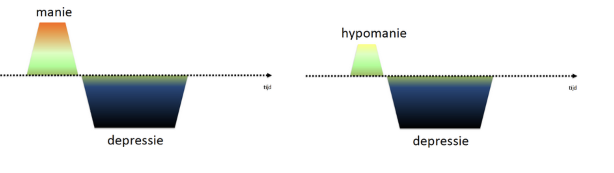
Vraag 68
Vraag 68. Persoonlijkheidsstoornissen
De DSM-5 (Diagnostic Statistical Manual of Mental disorders) kent voor persoonlijkheidsstoornissen een indeling in drie clusters.
Sleep de persoonlijkheidskenmerken/stoornissen naar het juiste cluster.
Sleep elk item naar de juiste categorie, of tik eerst op een kaart en dan op een categorie.
Cluster B
Sleep hier naartoe
Cluster C
Sleep hier naartoe
Cluster A
Sleep hier naartoe
Vraag 69
Vraag 69. Persoonlijkheidsstoornissen
Wat is kenmerkend voor welke persoonlijkheidsstoornis? Sleep de correcte beschrijving bij de juiste persoonlijkheidsstoornis.
Sleep een optie naar de bijbehorende rij, of tik eerst op een kaart en dan op een rij.
overmatige beheersing van emotionele uitingen
Sleep hier naartoe
het ontbreken van berouw
Sleep hier naartoe
de neiging tot automutilatie
Sleep hier naartoe
Vraag 70
Vraag 70. Angststoornissen
Mevrouw van Galen houdt erg van Hema rookworst. Echter, als ze in de Hema komt en in de rij wil gaan staan, wordt ze benauwd, krijgt ze hartkloppingen en gaat ze zweten en trillen. Ze besluit geen rookworst meer te eten in de Hema. Zodoende heeft ze ook geen aanvallen meer.
Vul in:
In bovenstaande casus is sprake van een .
De angst op een plaats of in een situatie te zijn waaruit ontsnappen moeilijk of beschamend kan zijn, past het beste bij een .
Vraag 71
Vraag 71. Bijwerkingen antipsychotica
Sleep de beschrijving van de bijwerking naar de bijbehorende naam van de bijwerking.
Sleep een optie naar de bijbehorende rij, of tik eerst op een kaart en dan op een rij.
Acute dystonie
Sleep hier naartoe
Parkinsonisme
Sleep hier naartoe
Tardieve dyskinesie
Sleep hier naartoe
Acathisie
Sleep hier naartoe
Vraag 72
Vraag 72. Stoornissen in het gebruik van middelen
Welke symptomen van intoxicatie of overdosering horen bij welk middel?
Sleep een optie naar de bijbehorende rij, of tik eerst op een kaart en dan op een rij.
Alcohol
Sleep hier naartoe
Cannabis
Sleep hier naartoe
Cocaïne
Sleep hier naartoe
Heroïne
Sleep hier naartoe
Vraag 73
Vraag 73. Dwangstoornissen
Welke symptomen horen bij welk kenmerk?
schoonmaakrituelen
dwanggedachten
dwangmatig tellen
dwangvoorstellingen
Vraag 74
Vraag 74. Neurocognitieve stoornissen
Een 75-jarige vrouw met een blanco somatische- en psychiatrische voorgeschiedenis wordt thuis door de huisarts bezocht omdat haar dochter zich zorgen maakt over haar. Ze is toenemend vergeetachtig en af en toe raakt ze de weg kwijt. Patiënte is in korte tijd ADL afhankelijk geworden.
Ten aanzien van de diagnose differentiëren onderstaande gegevens tussen de mogelijk onderliggende aandoeningen.
Wat hoort bij wat?
Sleep een optie naar de bijbehorende rij, of tik eerst op een kaart en dan op een rij.
Overdag slaperig en 's nachts rusteloos en emotioneel
Sleep hier naartoe
MRI toont hippocampusatrofie
Sleep hier naartoe
Ernstige gevoeligheid voor bijwerkingen bij lage dosis antipsychotica
Sleep hier naartoe
Vraag 75
Vraag 75. Onderscheid tussen somatoforme stoornissen, nagebootste stoornissen en simulatie
Welke beschrijving hoort bij welke stoornis?
Sleep een optie naar de bijbehorende rij, of tik eerst op een kaart en dan op een rij.
Nagebootste stoornis
Sleep hier naartoe
Somatisch symptoomstoornis
Sleep hier naartoe
Simulatie
Sleep hier naartoe
Vraag 76
Vraag 76. Depressieve stoornissen
Binnen de depressieve stemmingsstoornissen worden verschillende subtypen onderscheiden.
Welke kenmerken passen bij het subtype 'vitale/melancholische depressie' en welke bij het subtype 'depressie met atypische kenmerken'?
Sleep elk item naar de juiste categorie, of tik eerst op een kaart en dan op een categorie.
Depressie met atypische kenmerken
Sleep hier naartoe
Vitale/melancholische depressie
Sleep hier naartoe
Vraag 77
Vraag 77. Psychofarmaca
Psychofarmaca kunnen gepaard gaan met specifieke bijwerkingen.
Welke bijwerkingen zijn kenmerkend voor welk geneesmiddel of groep geneesmiddelen?
Sleep een optie naar de bijbehorende rij, of tik eerst op een kaart en dan op een rij.
Sleep een optie naar de bijbehorende rij, of tik eerst op een kaart en dan op een rij.
insomnia
Sleep hier naartoe
circadiane slaapstoornis
Sleep hier naartoe
hypersomnolentie
Sleep hier naartoe
parasomnia
Sleep hier naartoe
Vraag 79
Vraag 79. Psychiatrisch onderzoek
De ziektebeelden schizofrenie, depressie met psychotische kenmerken en manie met psychotische kenmerken kunnen door middel van psychiatrisch onderzoek worden onderscheiden. Bij deze ziektebeelden kan onder andere de cognitieve functie verstoord zijn.
Welk symptoom is het meest kenmerkend voor welk ziektebeeld?
Sleep een optie naar de bijbehorende rij, of tik eerst op een kaart en dan op een rij.
Manie met psychotische kenmerken
Sleep hier naartoe
Schizofrenie
Sleep hier naartoe
Depressie met psychotische kenmerken
Sleep hier naartoe
Vraag 80
Vraag 80. Medicatie bij borderline persoonlijkheidsstoornis
Welke farmacotherapie heeft de voorkeur indien men medicatie wil geven tegen impulsieve agressie of overmatige boosheid bij een borderline persoonlijkheidsstoornis? (interactieve versie volgt)
Modelantwoord
(volgt)
Vraag 81
Vraag 81. ADHD
ADHD (Attention Deficit Hyperactivity Disorder)
Vraag 82
Vraag 82. Suïcidaal gedrag
Wat zijn risicofactoren voor suïcidaal gedrag? (meerdere antwoorden mogelijk)
Meerdere antwoorden mogelijk.
Vraag 83
Vraag 83. Farmacotherapie bij stoppen met roken
Voor tabaksverslaafden die willen stoppen met roken bestaat een effectieve farmacotherapie in de vorm van het geneesmiddel
Vraag 84
Vraag 84. Farmacotherapie bij depressie
Bij de behandeling van een depressie hebben SSRI’s en TCA’s in eerste instantie de voorkeur boven behandeling met Monoamineoxidase (MAO) remmers.
Dit hangt samen met het bijwerkingsprofiel van MAO-remmers, in het bijzonder bij het gebruik van tyraminerijk voedsel het optreden van
Vraag 85
Vraag 85. Antipsychotica bij schizofrenie
De positieve verschijnselen van schizofrenie (wanen, hallucinaties) kunnen effectief worden onderdrukt door typische (klassieke, eerste generatie) antipsychotica zoals haloperidol.
De effectiviteit van deze antipsychotica is het gevolg van antagonisme op het niveau van
Vraag 86
Arts en patiënt 5
Vraag 86. Acute nierinsufficiëntie
Welke complicatie van een acute nierinsufficiëntie is het meest acuut levensbedreigend?
Vraag 87
Vraag 87. Chronische nierinsufficiëntie
Met welke maatregel kan de achteruitgang van de nierfunctie worden vertraagd bij patiënten met een ernstige chronische nierinsufficiëntie (stadium IV)?
Vraag 88
Vraag 88. Niervervangende behandeling
Wat is de best mogelijke vorm van niervervangende behandeling (ten aanzien van overleving en kwaliteit van leven), er vanuit gaande dat de patiënt in principe voor alle mogelijke vormen in aanmerking komt?
Vraag 89
Vraag 89. Acute of chronische nierinsufficiëntie
Bij een patiënt wordt een ernstige nierinsufficiëntie vastgesteld. De vraag is of deze nierinsufficiëntie acuut is, of het natuurlijk beloop van langer bestaande, chronische nierschade.
Wat pleit voor wat?
Sleep elk item naar de juiste categorie, of tik eerst op een kaart en dan op een categorie.
Chronische nierschade
Sleep hier naartoe
Acute nierschade
Sleep hier naartoe
Vraag 90
Vraag 90. Toxiciteit renaal geklaarde medicijnen bij ernstige nierschade
Bij ernstige nierschade (stadium IV en V) kan accumulatie optreden van renaal geklaarde medicijnen. Daarnaast kunnen bepaalde medicamenten tot vermindering van de nierfunctie leiden.
Welke complicatie hoort bij welk medicijn?
Sleep een optie naar de bijbehorende rij, of tik eerst op een kaart en dan op een rij.
atenolol
Sleep hier naartoe
diclofenac
Sleep hier naartoe
gentamycine
Sleep hier naartoe
metformin
Sleep hier naartoe
Vraag 91
Vraag 91. Bij het opstellen van een zorgplan bij patiënten met multimorbiditeit wordt vaak gebruik gemaakt van het SFMPC model.
Waarvoor staan de letters SFMPC?
S
F
M
P
C
Vraag 92
Vraag 92. Welke patiëntfactor is het meest bepalend in de ervaren belasting van mantelzorgers?
Vraag 93
Vraag 93. Atypische presentatie van ziekten bij ouderen
U wordt als specialist ouderengeneeskunde bij een 81-jarige man gevraagd vanwege algemene malaise en hoesten sinds 3 dagen. De rectaal gemeten temperatuur is 37.0 ̊C.
Is een pneumonie, gezien de normale lichaamstemperatuur, uitgesloten?
Vraag 94
Vraag 94. Verhoogd valrisico door medicijngebruik
Welke vier medicijngroepen geven een verhoogd valrisico?
Meerdere antwoorden mogelijk.
Vraag 95
Vraag 95. Een 75-jarige, zelfstandig wonende vrouw is het afgelopen half jaar twee keer gevallen. Ze weet eigenlijk niet goed waardoor het komt. Ze is beide keren tijdens het wandelen plotseling door haar benen gezakt en was even buiten bewustzijn. Om osteoporose te voorkomen gebruikte zij calciumcarbonaat en vitamine D. Haar medische voorgeschiedenis is blanco.
Welke onderdeel van het lichamelijk onderzoek is nu zeker van belang?
Vraag 96
Vraag 96. Onderscheid dementie en depressie
Bij welke diagnose(n) passen deze symptomen?
Sleep elk item naar de juiste categorie, of tik eerst op een kaart en dan op een categorie.
Dementie én depressie
Sleep hier naartoe
Dementie
Sleep hier naartoe
Depressie
Sleep hier naartoe
Vraag 97
Vraag 97. Palliatieve sedatie versus euthanasie
Als er bij een patiënt sprake is van ondraaglijk lijden wordt onder bepaalde omstandigheden soms gekozen voor palliatieve sedatie of voor euthanasie. Er zijn veel verschillen tussen palliatieve sedatie en euthanasie. Bij euthanasie dient de arts ten minste één andere onafhankelijke arts te raadplegen, die de patiënt zélf moet zien voor hij/zij een oordeel geeft. Bij palliatieve sedatie hoeft dit niet.
Geef verschillen tussen palliatieve sedatie en euthanasie aan door de criteria of uitgangspunten naar de juiste plaats te slepen.
Sleep elk item naar de juiste categorie, of tik eerst op een kaart en dan op een categorie.
Euthanasie
Sleep hier naartoe
Palliatieve sedatie
Sleep hier naartoe
Vraag 98
Vraag 98. Urine incontinentie
Urine incontinentie kan veroorzaakt worden door urologische afwijkingen, neurologische afwijkingen, andere onderliggende aandoeningen, medicatie, en attributieve factoren. Voorbeelden hiervan zijn: prostaathyperplasie, urineweginfectie, blaasstenen, diuretica, antiparkinsonmedicatie, delier en mobiliteitsstoornissen.
Welke drie aandoeningen, factoren of medicatie kunnen óók oorzaak zijn van incontinentie voor urine?
Meerdere antwoorden mogelijk.
Vraag 99
Vraag 99. Een patiënte van 78 jaar komt bij de huisarts in verband met verminderde visus. Ze voelt zich hierdoor onzeker bij het lopen. In de voorgeschiedenis is zij bekend met diabetes mellitus en angina pectoris. Bij onderzoek ziet de huisarts een vrouw met een verminderde visus rechts. De Amslertest toont rechts centraal vervormingen.
Wat is bij deze patiënte de meest waarschijnlijke diagnose ten aanzien van de verminderde visus?
Vraag 100
Vraag 100. Een 81-jarige vrouw wordt opgenomen in het VUmc. Zij weegt bij opname 52 kg.
Bij welke vraag voldoet zij aan de internationale criteria voor ondervoeding, als de vraag positief beantwoord wordt?